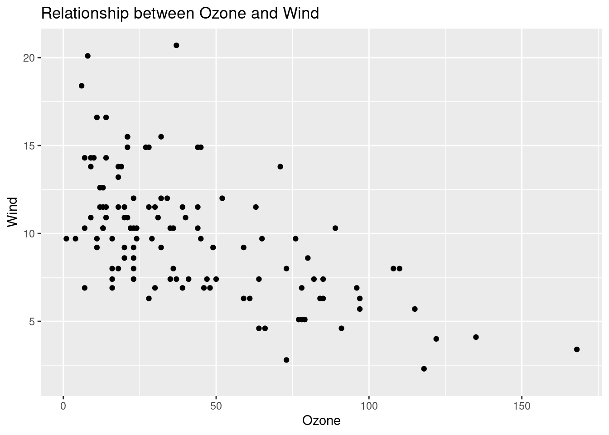

Chapter 5 Automating repeated things
Anything that can be automated should be automated. Do as little as possible by hand. Do as much as possible with functions. - Hadley Wickham
- Setup
# Install packages
if (!require("pacman")) {
install.packages("pacman")
}
pacman::p_load(
tidyverse, # tidyverse pkgs including purrr
bench, # performance test
tictoc, # performance test
broom, # tidy modeling
glue, # paste string and objects
furrr, # parallel processing
rvest, # web scraping
devtools, # dev tools
usethis, # workflow
roxygen2, # documentation
testthat, # testing
patchwork) # arranging ggplots 5.1 Flow control
Control structures = putting logic in code to control flow (e.g.,
if,else,for,while,repeat,break,next)Almost all the conditional operators used in Python also work in R. The basic loop set up is also very similar, with some small syntax adjustments.
if()is a function whose arguments must be specified inside parentheses.else, however, is a reserved operator that takes no arguments. Note that there is noelifoption — one simply writeselse if().Whereas operations to be executed after conditional evaluations in Python come after a
:, R operations must only be enclosed in curly brackets:{}. Furthermore, there is no requirement for indentation.
5.1.0.1 if (one condition)
x <- 5
if (x < 0) { # Condition
print("x is negative") # Do something
}x <- -5
if (x < 0) {
print("x is negative")
}## [1] "x is negative"5.1.0.2 if + else (two conditions)
x <- 5
if (x < 0) {
print("x is negative")
} else{
print("x is positive")
}## [1] "x is positive"5.1.0.3 if + else if + else (three conditions)
x <- 0
if (x < 0) { # Condition
print("x is negative") # Do something
} else if (x == 0) {
print("x is zero") # Do something else
} else {print("x is positive") # Do something else
}## [1] "x is zero"- In general, it’s not a good idea to write nested code (lots of
else_if()orifelse()). It’s difficult to read, debug, modulize, and extend. - Instead, write functions and, if necessary, use
if()only. We’ll come back to this later.
5.1.1 Functions
While functions are defined in Python using the def reserved operator, R sees functions as just another type of named object. Thus, they require explicit assignment to an object. This is done using the function function(), which creates a function taking the arguments specified in parentheses.
function = input + computation (begin -> end) + output
simple.function <- function(x){
print(x + 1)
}
simple.function(x = 2)## [1] 3less.simple.function <- function(x, y){
print(x - y + 1)
}
less.simple.function(x = 2, y = 10)## [1] -7With respect to returning function output, most of the same rules apply as with Python. Be sure to remember that return() will only process a single object, so multiple items must usually be returned as a list. Note that your ordering of the functions matters, too.
dumbfun <- function(x){
return(x)
print("This will never print :(")
}
dumbfun(x = "something")## [1] "something"dumbfun <- function(x){
print("Why did I print?")
return(x)
}
dumbfun(x = "something")## [1] "Why did I print?"## [1] "something"dumbfun <- function(x,y){
thing1 <- x
thing2 <- y
return(list(thing1, thing2))
}
dumbfun(x = "some text", y = "some data")## [[1]]
## [1] "some text"
##
## [[2]]
## [1] "some data"dumbfun(x = c(5,10,15), y = "some data")## [[1]]
## [1] 5 10 15
##
## [[2]]
## [1] "some data"R functions also allow you to set default argument values:
less.simple.function <- function(x, y = 0){
print(x - y + 1)
}
less.simple.function(x = 2)## [1] 3less.simple.function(x = 2, y = 10)## [1] -7With respect to specifying arguments, one can either use argument position specifications (i.e., the order) or argument name specifications. The latter is strongly preferred, as it is very easy to accidentally specify incorrect argument values.
send <- function(message, recipient, cc=NULL, bcc=NULL){
print(paste(message, recipient, sep = ", "))
print(paste("CC:", cc, sep = " "))
print(paste("BCC:", bcc, sep = " "))
}
send(message = "Hello", recipient = "World", cc = "Sun", bcc = "Jane")## [1] "Hello, World"
## [1] "CC: Sun"
## [1] "BCC: Jane"send("Hello", "World", "Sun", "Jane")## [1] "Hello, World"
## [1] "CC: Sun"
## [1] "BCC: Jane"send("Hello", "Sun", "Jane", "World")## [1] "Hello, Sun"
## [1] "CC: Jane"
## [1] "BCC: World"send(message = "Hello", cc = "Sun", bcc = c("Jane", "Rochelle"), recipient = "World")## [1] "Hello, World"
## [1] "CC: Sun"
## [1] "BCC: Jane" "BCC: Rochelle"Also, note that functions don’t have what CS people called side-effects. Functions only define local variables = They don’t change objects stored in the global environment. (Consider the difference between <- and = for assignments.) That’s why you can use functions for reusable tasks since it does not interrupt other important things in your system.
See the following example from Wilkinson.
a = 1
b = 2
f <- function(x)
{
a*x + b
}
f(2)## [1] 4g <- function(x)
{
a = 2
b = 1
f(x)
}
g(2) # a equals still 1 ## [1] 4Additional tips
- Nonstandard evaluation
Nonstandard evaluation is an advanced subject. If you feel overwhelmed, you are more than welcome to skip this. But if you are serious in R programming, this is something you want to check out. For deeper understanding of this issue, I recommend reading Ren Kun’s very informative blog post carefully.
This part draws on one of the [the dplyr package articles](https://dplyr.tidyverse.org/articles/programming.html.
In tidyverse, calling a variable with or without quotation mark (string or not) does make little difference because tidyeval is a type of non-standard evaluation. This flexibility runs into the following problem when it comes to programming.
# Using `mpg` instead of `mtcars$mpg` is called data masking.
mtcars %>% select(mpg)
mtcars %>% select("mpg")Data and env-variables
# df = environment variable
df <- data.frame(
x = c(1:5),
y = c(6:10)
)
# x, y = data variables
df$x## [1] 1 2 3 4 5df$y## [1] 6 7 8 9 10- Problem
x <- NULL
var_summary <- function(env_var, data_var){
env_var %>%
summarise(mean = mean(data_var))
}You may expect that the output is mean = 2.5 … but
It’s because the mean() function doesn’t take df$x for data_var but x. You need to link x with environment variable
var_summary(df, x)## Warning in mean.default(data_var): argument is not numeric or logical: returning
## NA## mean
## 1 NAThis is how you can fix this.
# Solution
vs_fix <- function(env_var, data_var){
env_var %>%
summarise(mean = mean({{data_var}}))
}
# You can also do this.
vs_fix_enhanced <- function(env_var, data_var){
env_var %>%
summarise("mean_{{data_var}}" := mean({{data_var}})) # If you use the glue package, this syntax is very intuitive.
}
vs_fix_enhanced(df, x)## mean_x
## 1 3If you have a character vector input …
mtcars_count <- mtcars %>%
names() %>%
purrr::map(~count(mtcars, .data[[.x]])) # We're going to learn about map in the rest of this session.
mtcars_count[[1]]## mpg n
## 1 10.4 2
## 2 13.3 1
## 3 14.3 1
## 4 14.7 1
## 5 15.0 1
## 6 15.2 2
## 7 15.5 1
## 8 15.8 1
## 9 16.4 1
## 10 17.3 1
## 11 17.8 1
## 12 18.1 1
## 13 18.7 1
## 14 19.2 2
## 15 19.7 1
## 16 21.0 2
## 17 21.4 2
## 18 21.5 1
## 19 22.8 2
## 20 24.4 1
## 21 26.0 1
## 22 27.3 1
## 23 30.4 2
## 24 32.4 1
## 25 33.9 15.1.2 for loop

Concept map for a for loop. Source: https://teachtogether.tech/en/index.html#s:memory-concept-maps
Loops in R also work basically the same way as in Python, with just a few adjustments. First, recall that index positions in R start at 1. Second, while() and for() are functions rather than reserved operators, meaning they must take arguments in parentheses. Third, just like else, the in operator is reserved and takes no arguments in parentheses. Fourth, the conditional execution must appear between curly brackets. Finally, indentation is meaningless, but each new operation must appear on a new line.
while(): when we have no idea how many times loop needs to be executed.for(): when we know how many times loop needs to be executed. This is likely to be the loop you are going to use most frequently.
fruits <- c("apples", "oranges", "pears", "bananas")
# a while loop
i <- 1
while (i <= length(fruits)) {
print(fruits[i])
i <- i + 1
}## [1] "apples"
## [1] "oranges"
## [1] "pears"
## [1] "bananas"# a for loop
for (i in 1:length(fruits)) {
print(fruits[i])
}## [1] "apples"
## [1] "oranges"
## [1] "pears"
## [1] "bananas"5.1.3 apply family
While and for loops in R can be very slow. For this reason, R has a number of built-in iteration methods to speed up execution times. In many cases, packages will have “behind-the-scenes” ways to avoid for loops, but what if you need to write your own function?
A common method of getting around for loops is the apply family of functions. These take a data structure and a function, and applies a function over all the elements in the object.
fruit <- c("apple", "orange", "pear", "banana")
# make function that takes in only one element
make.plural <- function(x){
plural <- paste(x, 's', sep = '') # sep is for collapse, so collpase ''
return(plural)
}
make.plural('apple')## [1] "apples"apply(): loop over the margins (1 = row, 2 = column) of an arraylapply(): loop over a list then returns a listsapply(): loop over a list then returns a named vectortapply(): loop over subsets of a vectormapply(): multivariate version oflapply(). Use this if you have a function that takes in 2 or more arguments.
# apply that function to every element
lapply(fruit, make.plural) # returns a list## [[1]]
## [1] "apples"
##
## [[2]]
## [1] "oranges"
##
## [[3]]
## [1] "pears"
##
## [[4]]
## [1] "bananas"sapply(fruit, make.plural) # returns a named vector## apple orange pear banana
## "apples" "oranges" "pears" "bananas"library(purrr) # load package
map(fruit, make.plural) # type consistent## [[1]]
## [1] "apples"
##
## [[2]]
## [1] "oranges"
##
## [[3]]
## [1] "pears"
##
## [[4]]
## [1] "bananas"# Why sapply is bad
sapply(1:100, paste) # return character ## [1] "1" "2" "3" "4" "5" "6" "7" "8" "9" "10" "11" "12"
## [13] "13" "14" "15" "16" "17" "18" "19" "20" "21" "22" "23" "24"
## [25] "25" "26" "27" "28" "29" "30" "31" "32" "33" "34" "35" "36"
## [37] "37" "38" "39" "40" "41" "42" "43" "44" "45" "46" "47" "48"
## [49] "49" "50" "51" "52" "53" "54" "55" "56" "57" "58" "59" "60"
## [61] "61" "62" "63" "64" "65" "66" "67" "68" "69" "70" "71" "72"
## [73] "73" "74" "75" "76" "77" "78" "79" "80" "81" "82" "83" "84"
## [85] "85" "86" "87" "88" "89" "90" "91" "92" "93" "94" "95" "96"
## [97] "97" "98" "99" "100"sapply(integer(), paste) # return list!## list()library(purrr)
map(1:100, paste) # return list## [[1]]
## [1] "1"
##
## [[2]]
## [1] "2"
##
## [[3]]
## [1] "3"
##
## [[4]]
## [1] "4"
##
## [[5]]
## [1] "5"
##
## [[6]]
## [1] "6"
##
## [[7]]
## [1] "7"
##
## [[8]]
## [1] "8"
##
## [[9]]
## [1] "9"
##
## [[10]]
## [1] "10"
##
## [[11]]
## [1] "11"
##
## [[12]]
## [1] "12"
##
## [[13]]
## [1] "13"
##
## [[14]]
## [1] "14"
##
## [[15]]
## [1] "15"
##
## [[16]]
## [1] "16"
##
## [[17]]
## [1] "17"
##
## [[18]]
## [1] "18"
##
## [[19]]
## [1] "19"
##
## [[20]]
## [1] "20"
##
## [[21]]
## [1] "21"
##
## [[22]]
## [1] "22"
##
## [[23]]
## [1] "23"
##
## [[24]]
## [1] "24"
##
## [[25]]
## [1] "25"
##
## [[26]]
## [1] "26"
##
## [[27]]
## [1] "27"
##
## [[28]]
## [1] "28"
##
## [[29]]
## [1] "29"
##
## [[30]]
## [1] "30"
##
## [[31]]
## [1] "31"
##
## [[32]]
## [1] "32"
##
## [[33]]
## [1] "33"
##
## [[34]]
## [1] "34"
##
## [[35]]
## [1] "35"
##
## [[36]]
## [1] "36"
##
## [[37]]
## [1] "37"
##
## [[38]]
## [1] "38"
##
## [[39]]
## [1] "39"
##
## [[40]]
## [1] "40"
##
## [[41]]
## [1] "41"
##
## [[42]]
## [1] "42"
##
## [[43]]
## [1] "43"
##
## [[44]]
## [1] "44"
##
## [[45]]
## [1] "45"
##
## [[46]]
## [1] "46"
##
## [[47]]
## [1] "47"
##
## [[48]]
## [1] "48"
##
## [[49]]
## [1] "49"
##
## [[50]]
## [1] "50"
##
## [[51]]
## [1] "51"
##
## [[52]]
## [1] "52"
##
## [[53]]
## [1] "53"
##
## [[54]]
## [1] "54"
##
## [[55]]
## [1] "55"
##
## [[56]]
## [1] "56"
##
## [[57]]
## [1] "57"
##
## [[58]]
## [1] "58"
##
## [[59]]
## [1] "59"
##
## [[60]]
## [1] "60"
##
## [[61]]
## [1] "61"
##
## [[62]]
## [1] "62"
##
## [[63]]
## [1] "63"
##
## [[64]]
## [1] "64"
##
## [[65]]
## [1] "65"
##
## [[66]]
## [1] "66"
##
## [[67]]
## [1] "67"
##
## [[68]]
## [1] "68"
##
## [[69]]
## [1] "69"
##
## [[70]]
## [1] "70"
##
## [[71]]
## [1] "71"
##
## [[72]]
## [1] "72"
##
## [[73]]
## [1] "73"
##
## [[74]]
## [1] "74"
##
## [[75]]
## [1] "75"
##
## [[76]]
## [1] "76"
##
## [[77]]
## [1] "77"
##
## [[78]]
## [1] "78"
##
## [[79]]
## [1] "79"
##
## [[80]]
## [1] "80"
##
## [[81]]
## [1] "81"
##
## [[82]]
## [1] "82"
##
## [[83]]
## [1] "83"
##
## [[84]]
## [1] "84"
##
## [[85]]
## [1] "85"
##
## [[86]]
## [1] "86"
##
## [[87]]
## [1] "87"
##
## [[88]]
## [1] "88"
##
## [[89]]
## [1] "89"
##
## [[90]]
## [1] "90"
##
## [[91]]
## [1] "91"
##
## [[92]]
## [1] "92"
##
## [[93]]
## [1] "93"
##
## [[94]]
## [1] "94"
##
## [[95]]
## [1] "95"
##
## [[96]]
## [1] "96"
##
## [[97]]
## [1] "97"
##
## [[98]]
## [1] "98"
##
## [[99]]
## [1] "99"
##
## [[100]]
## [1] "100"map(integer(), paste) # return list## list()5.2 purrr
5.2.1 Why map?
5.2.1.1 Objectives
- How to use
purrrto automate workflow in a cleaner, faster, and more extendable way
5.2.1.2 Copy-and-paste programming
Copy-and-paste programming, sometimes referred to as just pasting, is the production of highly repetitive computer programming code, as produced by copy and paste operations. It is primarily a pejorative term; those who use the term are often implying a lack of programming competence. It may also be the result of technology limitations (e.g., an insufficiently expressive development environment) as subroutines or libraries would normally be used instead. However, there are occasions when copy-and-paste programming is considered acceptable or necessary, such as for boilerplate, loop unrolling (when not supported automatically by the compiler), or certain programming idioms, and it is supported by some source code editors in the form of snippets. - Wikipedia
The following exercise was inspired by Wickham’s example.
Let’s imagine
dfis a survey dataset.a, b, c, d= Survey questions-99: non-responsesYour goal: replace
-99withNA
# Data
set.seed(1234) # for reproducibility
df <- tibble(
"a" = sample(c(-99, 1:3), size = 5, replace = TRUE),
"b" = sample(c(-99, 1:3), size = 5, replace = TRUE),
"c" = sample(c(-99, 1:3), size = 5, replace = TRUE),
"d" = sample(c(-99, 1:3), size = 5, replace = TRUE)
)# Copy and paste
df$a[df$a == -99] <- NA
df$b[df$b == -99] <- NA
df$c[df$c == -99] <- NA
df$d[df$d == -99] <- NA
df## # A tibble: 5 x 4
## a b c d
## <dbl> <dbl> <dbl> <dbl>
## 1 3 3 3 1
## 2 3 2 3 1
## 3 1 NA 1 2
## 4 1 NA 2 1
## 5 NA 1 1 3- Challenge. Explain why this solution is not very efficient (Hint: If
df$a[df$a == -99] <- NAhas an error, how are you going to fix it? A solution is not scalable if it’s not automatable.
5.2.1.3 Using a function
Let’s recall what’s function in R:
input + computation + outputIf you write a function, you gain efficiency because you don’t need to copy and paste the computation part.
` function(input){
computation
return(output) } `
# Function
fix_missing <- function(x) {
x[x == -99] <- NA
x
}
# Apply function to each column (vector)
df$a <- fix_missing(df$a)
df$b <- fix_missing(df$b)
df$c <- fix_missing(df$c)
df$d <- fix_missing(df$d)
df## # A tibble: 5 x 4
## a b c d
## <dbl> <dbl> <dbl> <dbl>
## 1 3 3 3 1
## 2 3 2 3 1
## 3 1 NA 1 2
## 4 1 NA 2 1
## 5 NA 1 1 3Challenge Why using function is more efficient than 100% copying and pasting? Can you think about a way we can automate the process?
Many options for automation in R:
for loop,applyfamily, etc.Here’s a tidy solution comes from
purrrpackage.The power and joy of one-liner.
df <- purrr::map_df(df, fix_missing)
df## # A tibble: 5 x 4
## a b c d
## <dbl> <dbl> <dbl> <dbl>
## 1 3 3 3 1
## 2 3 2 3 1
## 3 1 NA 1 2
## 4 1 NA 2 1
## 5 NA 1 1 3map() is a higher-order function that applies a given function to each element of a list/vector.

This is how map() works. It’s easier to understand with a picture.
- Input: Takes a vector/list.
- Computation: Calls the function once for each element of the vector
- Output: Returns in a list or whatever data format you prefer (e.g., `_df helper: dataframe`)- Challenge If you run the code below, what’s going to be the data type of the output?
map(df, fix_missing)## $a
## [1] 3 3 1 1 NA
##
## $b
## [1] 3 2 NA NA 1
##
## $c
## [1] 3 3 1 2 1
##
## $d
## [1] 1 1 2 1 3- Why
map()is a good alternative tofor loop.
The Joy of Functional Programming (for Data Science) - Hadley Wickham
# Built-in data
data("airquality")
tic()
# Placeholder
out1 <- vector("double", ncol(airquality))
# Sequence variable
for (i in seq_along(airquality)) {
# Assign an iteration result to each element of the placeholder list
out1[[i]] <- mean(airquality[[i]], na.rm = TRUE)
}
toc()## 0.008 sec elapsedmap is faster because it applies function to the items on the list/vector in parallel. Also, using map_dbl reduces an extra step you need to take. Hint: map_dbl(x, mean, na.rm = TRUE) = vapply(x, mean, na.rm = TRUE, FUN.VALUE = double(1))
tic()
out1 <- airquality %>% map_dbl(mean, na.rm = TRUE)
toc()## 0.002 sec elapsedIn short,
map()is more readable, faster, and easily extendable with other data science tasks (e.g., wrangling, modeling, and visualization) using%>%.Final point: Why not base R
applyfamily?Short answer:
purrr::map()is simpler to write. For instance,
Additional tips
Performance testing (profiling) is an important part of programming. tictoc() measures the time that needs to take to run a target function for once. If you want a more robust measure of timing as well as information on memory (speed and space both matter for performance testing), consider using the bench package that is designed for high precising timing of R expressions.
map_mark <- bench::mark(
out1 <- airquality %>% map_dbl(mean, na.rm = TRUE)
)
map_mark## # A tibble: 1 x 6
## expression min median `itr/sec`
## <bch:expr> <bch:tm> <bch:tm> <dbl>
## 1 out1 <- airquality %>% map_dbl(mean, na.rm = TRUE) 67.8µs 76.1µs 10614.
## # … with 2 more variables: mem_alloc <bch:byt>,
## # gc/sec <dbl>5.2.1.4 Applications
- Many models
- One popular application of
map()is to run regression models (or whatever model you want to run) on list-columns. No more copying and pasting for running many regression models on subgroups!
# Have you ever tried this?
lm_A <- lm(y ~ x, subset(data, subgroup == "group_A"))
lm_B <- lm(y ~ x, subset(data, subgroup == "group_B"))
lm_C <- lm(y ~ x, subset(data, subgroup == "group_C"))
lm_D <- lm(y ~ x, subset(data, subgroup == "group_D"))
lm_E <- lm(y ~ x, subset(data, subgroup == "group_E"))- For more information on this technique, read the Many Models subchapter of the R for Data Science.
# Function
lm_model <- function(df) {
lm(Temp ~ Ozone, data = df)
}
# Map
models <- airquality %>%
group_by(Month) %>%
nest() %>% # Create list-columns
mutate(ols = map(data, lm_model)) # Map
models$ols[1]## [[1]]
##
## Call:
## lm(formula = Temp ~ Ozone, data = df)
##
## Coefficients:
## (Intercept) Ozone
## 62.8842 0.1629# Add tidying
tidy_lm_model <- purrr::compose( # compose multiple functions
broom::tidy, # convert lm objects into tidy tibbles
lm_model
)
tidied_models <- airquality %>%
group_by(Month) %>%
nest() %>% # Create list-columns
mutate(ols = map(data, tidy_lm_model))
tidied_models$ols[1]## [[1]]
## # A tibble: 2 x 5
## term estimate std.error statistic p.value
## <chr> <dbl> <dbl> <dbl> <dbl>
## 1 (Intercept) 62.9 1.61 39.2 2.88e-23
## 2 Ozone 0.163 0.0500 3.26 3.31e- 3- Simulations
A good friend of map() function is rerun() function. This comibination is really useful for simulations. Consider the following example.
- Base R approach
set.seed(1234)
small_n <- 100 ; k <- 1000 ; mu <- 500 ; sigma <- 20
y_list <- rep(list(NA), k)
for (i in seq(k)) {
y_list[[i]] <- rnorm(small_n, mu, sigma)
}
y_means <- unlist(lapply(y_list, mean))
qplot(y_means) +
geom_vline(xintercept = 500, linetype = "dotted", color = "red")## `stat_bin()` using `bins = 30`. Pick better value with `binwidth`.
- rerun() + map()
small_n <- 100 ; k <- 1000
y_tidy <- rerun(k, rnorm(small_n, mu, sigma))
y_means_tidy <- map_dbl(y_tidy, mean)
# Visualize
(qplot(y_means) +
geom_vline(xintercept = 500, linetype = "dotted", color = "red")) +
(qplot(y_means_tidy) +
geom_vline(xintercept = 500, linetype = "dotted", color = "red"))## `stat_bin()` using `bins = 30`. Pick better value with `binwidth`.
## `stat_bin()` using `bins = 30`. Pick better value with `binwidth`.
5.3 Automote 2 or 2+ tasks
5.3.1 Objectives
- Learning how to use
map2()andpmap()to avoid writing nested loops.
5.3.2 Problem
- Problem: How can you create something like below?
[1] “University = Berkeley | Department = waterbenders”
[1] “University = Berkeley | Department = earthbenders”
[1] “University = Berkeley | Department = firebenders”
[1] “University = Berkeley | Department = airbenders”
[1] “University = Stanford | Department = waterbenders”
[1] “University = Stanford | Department = earthbenders”
[1] “University = Stanford | Department = firebenders”
[1] “University = Stanford | Department = airbenders”
- The most manual way: You can copy and paste eight times.
paste("University = Berkeley | Department = CS")## [1] "University = Berkeley | Department = CS"5.3.3 For loop
A slightly more efficient way: using a for loop.
Think about which part of the statement is constant and which part varies ( = parameters).
Do we need a placeholder? No. We don’t need a placeholder because we don’t store the result of iterations.
Challenge: How many parameters do you need to solve the problem below?
# Outer loop
for (univ in c("Berkeley", "Stanford")) {
# Inner loop
for (dept in c("waterbenders", "earthbenders", "firebenders", "airbenders")) {
print(paste("University = ", univ, "|", "Department = ", dept))
}
}## [1] "University = Berkeley | Department = waterbenders"
## [1] "University = Berkeley | Department = earthbenders"
## [1] "University = Berkeley | Department = firebenders"
## [1] "University = Berkeley | Department = airbenders"
## [1] "University = Stanford | Department = waterbenders"
## [1] "University = Stanford | Department = earthbenders"
## [1] "University = Stanford | Department = firebenders"
## [1] "University = Stanford | Department = airbenders"- This is not bad, but …
narguments ->n-nested for loops. As a scale of your problem grows, your code gets really complicated.
To become significantly more reliable, code must become more transparent. In particular, nested conditions and loops must be viewed with great suspicion. Complicated control flows confuse programmers. Messy code often hides bugs. — Bjarne Stroustrup
5.3.4 map2 & pmap
Step 1: Define inputs and a function.
Challenge Why are we using
rep()to create input vectors? For instance, foruniv_listwhy not just usec("Berkeley", "Stanford")?
# Inputs (remember the length of these inputs should be identical)
univ_list <- rep(c("Berkeley", "Stanford"), 4)
dept_list <- rep(c("waterbenders", "earthbenders", "firebenders", "airbenders"), 2)
# Function
print_lists <- function(univ, dept) {
print(paste(
"University = ", univ, "|",
"Department = ", dept
))
}
# Test
print_lists(univ_list[1], dept_list[1])## [1] "University = Berkeley | Department = waterbenders"- Step2: Using
map2()orpmap()

# 2 arguments
map2_output <- map2(univ_list, dept_list, print_lists)## [1] "University = Berkeley | Department = waterbenders"
## [1] "University = Stanford | Department = earthbenders"
## [1] "University = Berkeley | Department = firebenders"
## [1] "University = Stanford | Department = airbenders"
## [1] "University = Berkeley | Department = waterbenders"
## [1] "University = Stanford | Department = earthbenders"
## [1] "University = Berkeley | Department = firebenders"
## [1] "University = Stanford | Department = airbenders"
# 3+ arguments
pmap_output <- pmap(list(univ_list, dept_list), print_lists)## [1] "University = Berkeley | Department = waterbenders"
## [1] "University = Stanford | Department = earthbenders"
## [1] "University = Berkeley | Department = firebenders"
## [1] "University = Stanford | Department = airbenders"
## [1] "University = Berkeley | Department = waterbenders"
## [1] "University = Stanford | Department = earthbenders"
## [1] "University = Berkeley | Department = firebenders"
## [1] "University = Stanford | Department = airbenders"- Challenge Have you noticed that we used a slightly different input for
pmap()compared tomap()ormap2()? What is the difference?
5.4 Automate plotting
5.4.1 Objective
- Learning how to use
map()andglue()to automate creating multiple plots
5.4.2 Problem
- Making the following data visualization process more efficient.
data("airquality")
airquality %>%
ggplot(aes(x = Ozone, y = Solar.R)) +
geom_point() +
labs(
title = "Relationship between Ozone and Solar.R",
y = "Solar.R"
)## Warning: Removed 42 rows containing missing values (geom_point).
airquality %>%
ggplot(aes(x = Ozone, y = Wind)) +
geom_point() +
labs(
title = "Relationship between Ozone and Wind",
y = "Wind"
)## Warning: Removed 37 rows containing missing values (geom_point).
airquality %>%
ggplot(aes(x = Ozone, y = Temp)) +
geom_point() +
labs(
title = "Relationship between Ozone and Temp",
y = "Temp"
)## Warning: Removed 37 rows containing missing values (geom_point).
5.4.3 Solution
Learn how
glue()works.glue()combines strings and objects and it works simpler and faster thanpaste()orsprintif().
names <- c("Jae", "Aniket", "Avery")
fields <- c("Political Science", "Law", "Public Health")
glue("{names} studies {fields}.")## Jae studies Political Science.
## Aniket studies Law.
## Avery studies Public Health.So, our next step is to combine
glue()andmap().Let’s first think about writing a function that includes
glue().Challenge How can you create the character vector of column names?
Challenge How can you make
ggplot2()take strings as x and y variable names? (Hint: Type?aes_string())
airquality %>%
ggplot(aes_string(x = names(airquality)[1], y = names(airquality)[2])) +
geom_point() +
labs(
title = glue("Relationship between Ozone and {names(airquality)[2]}"),
y = glue("{names(airquality)[2]}")
)## Warning: Removed 42 rows containing missing values (geom_point).
The next step is to write an automatic plotting function.
- Note that in the function argument
i(abstract) replaced 2 (specific): abstraction
- Note that in the function argument
create_point_plot <- function(i) {
airquality %>%
ggplot(aes_string(x = names(airquality)[1], y = names(airquality)[i])) +
geom_point() +
labs(
title = glue("Relationship between Ozone and {names(airquality)[i]}"),
y = glue("{names(airquality)[i]}")
)
}- The final step is to put the function in
map().
map(2:ncol(airquality), create_point_plot)## [[1]]## Warning: Removed 42 rows containing missing values (geom_point).##
## [[2]]## Warning: Removed 37 rows containing missing values (geom_point).
##
## [[3]]## Warning: Removed 37 rows containing missing values (geom_point).
##
## [[4]]## Warning: Removed 37 rows containing missing values (geom_point).##
## [[5]]## Warning: Removed 37 rows containing missing values (geom_point).
5.5 Automate joining
5.5.1 Objective
- Learning how to use
reduce()to automate row-binding multiple dataframes
5.5.2 Problem
- How can you make row-binding multiple dataframes more efficient?
df1 <- tibble(
x = sample(1:10, size = 3, replace = TRUE),
y = sample(1:10, size = 3, replace = TRUE),
z = sample(1:10, size = 3, replace = TRUE)
)
df2 <- tibble(
x = sample(1:10, size = 3, replace = TRUE),
y = sample(1:10, size = 3, replace = TRUE),
z = sample(1:10, size = 3, replace = TRUE)
)
df3 <- tibble(
x = sample(1:10, size = 3, replace = TRUE),
y = sample(1:10, size = 3, replace = TRUE),
z = sample(1:10, size = 3, replace = TRUE)
)5.5.3 Copy and paste
first_bind <- bind_rows(df1, df2)
second_bind <- bind_rows(first_bind, df3)- Challenge Why the above solution is not efficient?
5.5.4 reduce

How reduce() works.
- Input: Takes a vector of length n
- Computation: Calls a function with a pair of values at a time
- Output: Returns a vector of length 1reduced <- reduce(list(df1, df2, df3), bind_rows)5.6 Make automation slower or faster
5.6.1 Objectives
- Learning how to use
slowly()andfuture_to make automation process either slower or faster
5.6.2 How to make automation slower
- Scraping 50 pages from a website and you don’t want to overload the server. How can you do that?
5.6.3 For loop
5.6.4 Map
walk()works same asmap()but doesn’t store its output.If you’re web scraping, one problem with this approach is it’s too fast by human standards.
If you want to make the function run slowly …
slowly() takes a function and modifies it to wait a given amount of time between each call. -
purrrpackage vignette - If a function is a verb, then a helper function is an adverb (modifying the behavior of the verb).
5.6.5 How to make automation Faster
In a different situation, you want to make your function run faster. This is a common situation when you collect and analyze data at large-scale. You can solve this problem using parallel processing. For more on the parallel processing in R, read this review.
Parallel processing setup
Step1: Determine the number of max workers (
availableCores())Step2: Determine the parallel processing mode (
plan())
5.7 Make error handling easier
5.7.1 Learning objective
Learning how to use
safely()andpossibly()to make error handling easier ### ProblemChallenge
Explain why we can’t run
map(url_list, read_html)
url_list <- c(
"https://en.wikipedia.org/wiki/University_of_California,_Berkeley",
"https://en.wikipedia.org/wiki/Stanford_University",
"https://en.wikipedia.org/wiki/Carnegie_Mellon_University",
"https://DLAB"
)map(url_list, read_html)- This is a very simple problem so it’s easy to tell where the problem is. How can you make your error more informative?
5.7.2 Solution
5.7.2.1 Try-catch
There are three kinds of messages you will run into, if your code has an error based on the following functions.
stop(): errors; Functions must stop.warning(): warnings; Functions may still work. Nonetheless, something is possibly messed up.message(): messages; Some actions happened.
The basic logic of
try-catch, R’s basic error handling function, works like the following.
tryCatch(
{
map(url_list, read_html)
},
warning = function(w) {
"Warning"
},
error = function(e) {
"Error"
},
finally = {
"Message"
}
)## [1] "Error"- Here’s
purrrversion of thetry-catchmechanism (evaluates code and assigns exception handlers).
5.7.2.2 safely
Outputs
- result: result or
NULL - error:
NULLorerror
map(url_list, safely(read_html))## [[1]]
## [[1]]$result
## {html_document}
## <html class="client-nojs" lang="en" dir="ltr">
## [1] <head>\n<meta http-equiv="Content-Type" content="text/html; charset=UTF-8 ...
## [2] <body class="mediawiki ltr sitedir-ltr mw-hide-empty-elt ns-0 ns-subject ...
##
## [[1]]$error
## NULL
##
##
## [[2]]
## [[2]]$result
## {html_document}
## <html class="client-nojs" lang="en" dir="ltr">
## [1] <head>\n<meta http-equiv="Content-Type" content="text/html; charset=UTF-8 ...
## [2] <body class="mediawiki ltr sitedir-ltr mw-hide-empty-elt ns-0 ns-subject ...
##
## [[2]]$error
## NULL
##
##
## [[3]]
## [[3]]$result
## {html_document}
## <html class="client-nojs" lang="en" dir="ltr">
## [1] <head>\n<meta http-equiv="Content-Type" content="text/html; charset=UTF-8 ...
## [2] <body class="mediawiki ltr sitedir-ltr mw-hide-empty-elt ns-0 ns-subject ...
##
## [[3]]$error
## NULL
##
##
## [[4]]
## [[4]]$result
## NULL
##
## [[4]]$error
## <simpleError in open.connection(x, "rb"): Could not resolve host: DLAB>- The easier way to solve this problem is just avoiding the error.
map(url_list, safely(read_html)) %>%
map("result") %>%
# = map(function(x) x[["result"]]) = map(~.x[["name"]])
purrr::compact() # Remove empty elements## [[1]]
## {html_document}
## <html class="client-nojs" lang="en" dir="ltr">
## [1] <head>\n<meta http-equiv="Content-Type" content="text/html; charset=UTF-8 ...
## [2] <body class="mediawiki ltr sitedir-ltr mw-hide-empty-elt ns-0 ns-subject ...
##
## [[2]]
## {html_document}
## <html class="client-nojs" lang="en" dir="ltr">
## [1] <head>\n<meta http-equiv="Content-Type" content="text/html; charset=UTF-8 ...
## [2] <body class="mediawiki ltr sitedir-ltr mw-hide-empty-elt ns-0 ns-subject ...
##
## [[3]]
## {html_document}
## <html class="client-nojs" lang="en" dir="ltr">
## [1] <head>\n<meta http-equiv="Content-Type" content="text/html; charset=UTF-8 ...
## [2] <body class="mediawiki ltr sitedir-ltr mw-hide-empty-elt ns-0 ns-subject ...5.7.2.3 possibly
What if the best way to solve the problem is not ignoring the error …
# If error occurred, "The URL is broken." will be stored in that element(s).
out <- map(
url_list,
possibly(read_html,
otherwise = "The URL is broken."
)
)
# Let's find the broken URL.
url_list[out[seq(out)] == "The URL is broken."]## [1] "https://DLAB"5.8 Developing your own data products
A data product is the production output from a statistical analysis. - Brian Caffo
5.8.1 Developing R packages
- Reuse your code
- Automate your workflow
- Help others (be part of an open source development community)
5.8.1.1 Workflow
- Write code in
\R - Document code in
\man(automated byroxygen2package)
devtools::document()
- Check dependencies in
NAMESPACE
devtools::update()updates the documentationdevtools::check()to see whether your package is ready to be submitted to CRAN
- Build a package (for more information, read this section in Hadley’s R package development book)
devtools::build()
- (Optional) Test (
devtools::test()), teach in\vignettes, and add data in\data - Distribute the package either via CRAN or GitHub

It’s time to learn five states of R code: source, bundled, binary, installed, and in-memory.
If you’re just using an R package, you’re only concerned of the last two states: install.packages("pkg") and library(pkg) If you’re developing an R package, you first write source code (*.R), bundle it (compressed file like *.tar.gz; done by devtools::build()), then make it binary (devtools::build(binary = TRUE); This is how a package is stored in CRAN/GitHub, etc.).
5.8.1.2 Required Components
The 4 required components are necessary to build and distribute a minimally viable R package. The other steps are optional.
- Package
\R: R functions\man: function documentations- DESCRIPTION: provides meta data about the package (e.g., author)
- LICENSE
- GNU, MIT, etc.
- NAMESPACE: package dependencies (to make your package self-contained)
- README (optional)
- Setup (DESCRIPTION)
# This function creates DESCRIPTION file
usethis::create_package(here("mypkg"))
# Initialize git repo
usethis::use_git()
# License the package
# You can use the MIT license by typing devtools::use_mit_license("author name"). The function produces MIT license related files (LICENSE, LICENSE.md).
use_mit_license("Jae Yeon Kim")
# Add README (optional)
# Makes the package more use-friendly
use_readme_md()
# Add news (optional)
# Helps track changes
use_news_md() - Write code (R)
usethis::use_r("rbind_mutate")#' Add two numbers
#'
#' @param x A number
#' @param y A number
#' @return The sum of x and y
#' @export
add <- function(x, y){
x + y
}If you used a function from other packages you need to reference it in the following way: #' @importFrom <package> <function>
- Document (man)
# Document
# The function creates documentation related files (NAMESPACE, function_name.rd)
devtools::document()
# Check; updates the documentation; builds and checks the package
devtools::check()- Organize (NAMESPACE)
usethis::use_package("dplyr")5.8.1.3 Optional Components
- Test (test)
usethis::use_testthat()
usethis::use_test("rbind_mutate")- Add data (data)
x <- "Jae"
y <- "Sun"
z <- "Jane"
usethis::use_data(x, y, z, overwrite = TRUE)- Teach (vignetts)
usethis::use_vignette("rbind_mutate")title: "Vignette title"
author: "Vignette author"
date: "2021-02-25"
output: rmarkdown::html_vignette
vignette: blah blah- You can build a package website using
pkgdown
# install.packages("pkgdown")
usethis::use_pkgdown()
pkgdown::build_site()- A package site includes information on METADATA, Function references, Articles, News, etc.
5.8.1.4 Building an R package
- CMD (in the terminal)
You can run R commands in the terminal using R CMD.
- devtools
# Build
devtools::build()
# Install
devtools::install()5.8.1.5 Distributing an R package
# Version update
usethis::use_version()
# Spell check
usethis::use_spell_check()- R package submission should comply with the CRAN Repository Policy
- GitHub
Push everything to the Git repository (you can do it using command-line interface or RStudio).
Don’t forget that your repository should be
public.I highly recommend connecting GitHub with SSH. For more information, visit this link.
Additional tips
- If you want to use pipe operator (%) in your functions, save the following script as
utils-pipe.R.
#' Pipe operator
#'
#' See \code{magrittr::\link[magrittr:pipe]{\%>\%}} for details.
#'
#' @name %>%
#' @rdname pipe
#' @keywords internal
#' @export
#' @importFrom magrittr %>%
#' @usage lhs \%>\% rhs
NULL## NULL- Sometimes, you get the following error: “Undefined global functions or variables” If you experience this problem, save the following script as
globals.r.
utils::globalVariables(c("<undefined variable name1>", "<undefined variable name2>", "<undefinedvariable name3"))## [1] "<undefined variable name1>" "<undefined variable name2>"
## [3] "<undefinedvariable name3"5.8.2 Developing Shiny apps
Shiny is a “framework for creating web applications using R code.” You can create a dashboard or an interactive map without knowing anything about HTML, CSS, or JavaScript. Developing a shiny app helps people with little technical expertise to learn from your data in an intuitive and interactive way.
Shiny in production: Principles, practices, and tools - Joe Cheng
COVID-19 tracker by Edward Parker
5.8.2.1 Workflow
The workflow follows what Hadley Wickham recommended in his book on mastering shiny.
- Install libraries
install.packages("shiny")- Create app directory and file
Add an app.R file.
The key objective here is defining your UI (how the app looks; front-end = INPUT) (defined in object ui) and server (how the app works; back-end = OUTPUT) (defined in object server).
If you’re creating a complex app, you can achieve the same goal with two files: ui.R and server.R.
5.8.2.2 app.r
- Front-end
# Load packages
# Do not use install.packages(), pacman::p_load(), or library() if you intend to deploy the app using shinyapps.io
require("wordcloud2")
require("shiny")
require("shinydashboard")
require("colourpicker")
# Load data
df <- read.csv(url("https://github.com/jaeyk/covid19antiasian/raw/master/processed_data/hash_counts.csv"))[,-1]
# Defines the user interface; how the app looks
ui <- fluidPage(
# Application title
titlePanel("Word Cloud on the Hashtags of the Tweets related to COVID-19 & Asian|Chinese|Wuhan"),
h4(tags$a(href = "https://jaeyk.github.io/", "Developer: Jae Yeon Kim")),
sidebarLayout(
# Sidebar with sliders
sidebarPanel(
sliderInput("size",
"Font size:",
min = 1, max = 10,
value = 2)
),
mainPanel(
wordcloud2Output("cloud"),
)
)
)- Back-end
server <- function(input, output, session) {
output$cloud <- renderWordcloud2({
wordcloud2(df,
size = input$size,
color = "random-dark")
})
}- Build a shiny app
shinyApp(ui = ui, server = server)5.8.2.3 Deployment
- Deploy to the shinyapps.io cloud
# Install packages
install.packages("rsconnect")
library(rsconnect)
# Setup
rsconnect::setAccountInfo(name = "<Account name>",
token = "<Token>",
secret = "<Secret>")
rsconnect::deployApp(appNames = "<App name>")5.8.2.4 References
Mastering Shiny by Hadley Wickham. For newbies.
Shiny Documents by Yihui Xie
Engineering Production-Grade Shiny Apps by Colin Fay, Sébastien Rochette, Vincent Guyader, Cervan Girard. For experienced developers.
Building Shiny Apps by Dean Attali.
5.8.3 Other useful data products
- Automating data reports using rmarkdown (called parameterized reports)
- Automating R presentation using slidify
- Creating interactive web apps using leaflet